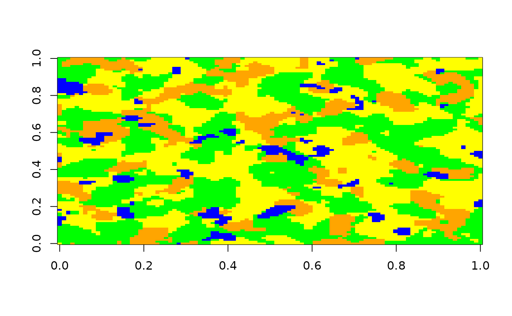
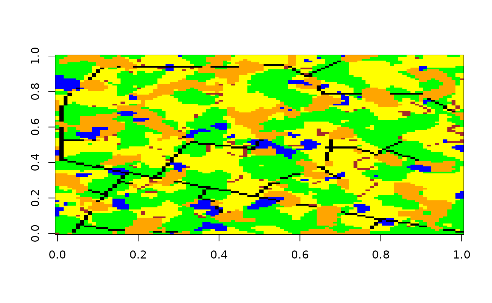
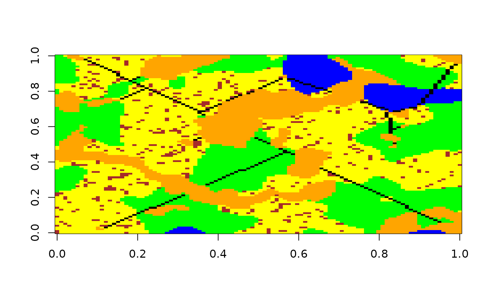
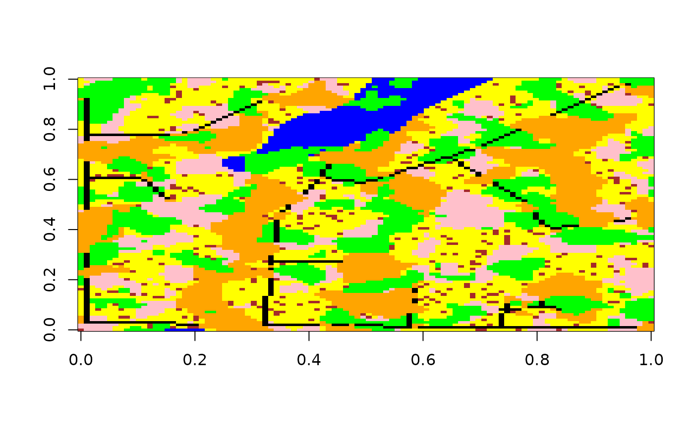
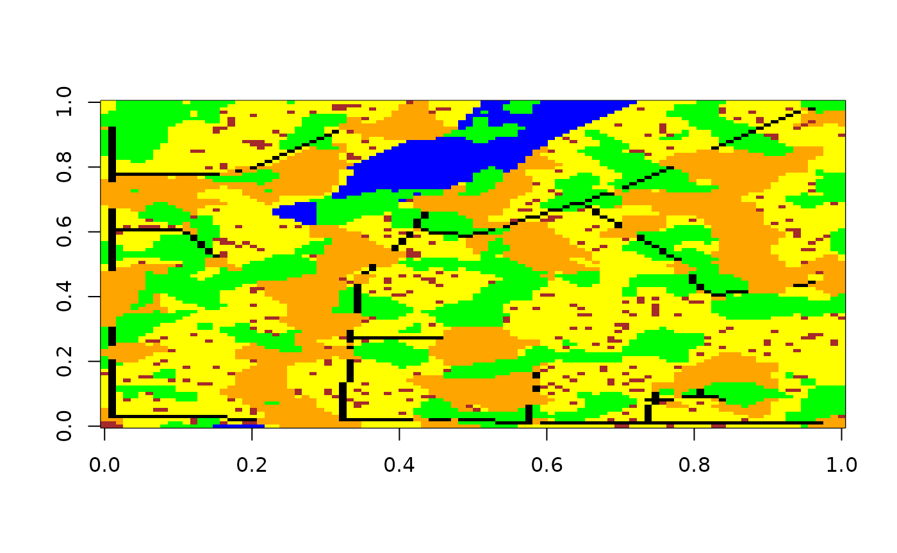
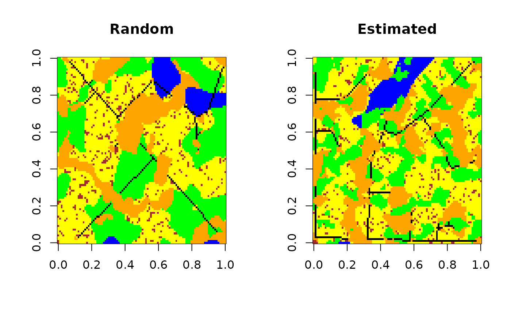

Basic Virtual Landscape Creation:
Create polygon (patch) landscape using
create_landscape()
library(landsimR)
set.seed(1)
landscape <- create_landscape(
dim = c(100, 100),
f = c(.05, .05, .05),
q = c(.05, .2, .5)
)
colors <- c('green', 'blue', 'orange', 'yellow', 'black', 'brown')
image(landscape, col = colors[1:4])
Add line features to landscape with
add_lines()
landscape <- add_lines(
landscape,
f = c(1, .025),
q = c(F, .025),
overlap = c(2, 3)
)
image(landscape, col = colors)
Convert landscape to LandscapeObj class
landscape <- LandscapeObj(
landscape,
classType = c(1,1,1,1,2,3)
)
class(landscape)
#> [1] "LandscapeObj"
#> attr(,"package")
#> [1] "landsimR"View LandscapeObj
landscape
#> LandscapeObj
#> landscape: matrix array dim: 100 100
#> class: 0 1 2 3 4 5
#> classType: 1 1 1 1 2 3View the structure of LandscapeObj
str(landscape)
#> Formal class 'LandscapeObj' [package "landsimR"] with 3 slots
#> ..@ landscape: num [1:100, 1:100] 5 0 0 2 0 0 0 0 0 0 ...
#> ..@ classes : chr [1:6] "0" "1" "2" "3" ...
#> ..@ classType: num [1:6] 1 1 1 1 2 3Use generic plot() function for
LandscapeObj
plot(landscape, col = colors)Randomization:
Use parameter randomization to create a random landscape
set.seed(0)
random_parameters <- list(
poly = list(
f = c(runif(1, 0.005, .01),
runif(1, .001, .1),
runif(1, .005, .05)
),
q = c(runif(1, 0, .1),
runif(1, 0.05, .25),
runif(1, 0.5, .9)
)
),
line = list(
f = c(1, runif(1, .025, .1)),
q = c(F, .05)
)
)
random_landscape <- create_landscape(
dim = c(100, 100),
f = random_parameters$poly$f,
q = random_parameters$poly$q
)
random_landscape <- random_landscape |>
add_lines(
random_parameters$line$f,
random_parameters$line$q,
overlap = c(2, 3)
)
image(random_landscape, col = colors)
Parameter estimation:
Estimate the input parameters of the random landscape using
estimate_parameters() function. The first (pink) class of
estimated_landscape is leftover cells
estimated_parameters <- estimate_parameters(
landscape = random_landscape,
curve = 5,
line = 4
)
estimated_landscape <- create_landscape(
dim = c(100, 100),
# f = parameters$poly$f[2:4],
# q = parameters$poly$q[2:4]
f = estimated_parameters$poly$f,
q = estimated_parameters$poly$q
)
estimated_landscape <- estimated_landscape |>
add_lines(
f = (estimated_parameters$line$f),
q = (estimated_parameters$line$q),
# overlap = c(2, 3)
overlap = c(3, 4)
)
# par(mfrow = c(1, 2))
# plot(random_landscape, col = c('green', 'blue', 'orange', 'yellow', 'black', 'brown'), axes = F, main = 'sample landscape')
image(estimated_landscape, col = c('pink', colors))
Random parameters and estimation
| Parameter | Random | Estimated | Difference (abs) |
|---|---|---|---|
| poly.f1 | 0.0094835 | 0.0085986 | 0.0008849 |
| poly.f2 | 0.0272854 | 0.0338074 | 0.0065220 |
| poly.f3 | 0.0217456 | 0.0607316 | 0.0389861 |
| poly.q1 | 0.0572853 | 0.0627338 | 0.0054485 |
| poly.q2 | 0.2316416 | 0.2947126 | 0.0630711 |
| poly.q3 | 0.5806728 | 0.7054134 | 0.1247406 |
| line.f1 | 1.0000000 | 1.0000000 | 0.0000000 |
| line.f2 | 0.0923792 | 0.1573066 | 0.0649274 |
| line.q1 | 0.0000000 | 0.0000000 | 0.0000000 |
| line.q2 | 0.0500000 | 0.0526139 | 0.0026139 |
Replace the leftover cells with the most common value around the cell
# library(devtools)
# devtools::load_all('~/landsimR/')
estimated_landscape <- estimated_landscape |>
.poly_landscape(c(1:max(estimated_landscape)), not = 5)
image(estimated_landscape, col = colors)
Side by side comparison of random and estimated
par(mfrow = c(1, 2))
image(random_landscape, col = colors, main = 'Random')
image(estimated_landscape, col = colors, main = 'Estimated')